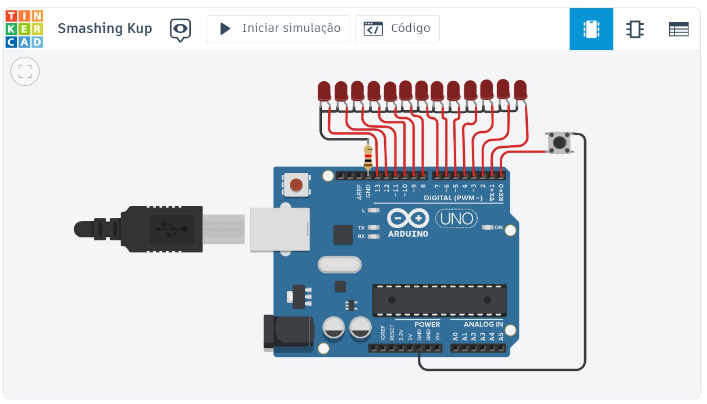

-
Automação Industrial
Com o aplicativo Tinkercad, realizamos a programação na linguagem C. Criamos um código para que o pino de LED acenda em sequência, utilizando um contador. Além disso, programamos um semáforo e um sensor ultrassônico, simulando um sensor de ré de um automóvel.
Nas aulas de robótica, aprendemos sobre a linguagem de programação Melfa Basic IV. Também estudamos os componentes mecânicos de um robô, sua cinemática, dinâmica, força e movimentos. Além disso, exploramos a nomenclatura dos eixos e da garra.
Conteúdos Abordados Microcontrolador Sensores ultrassônicos Robótica Slideshow com barra de rolagem 